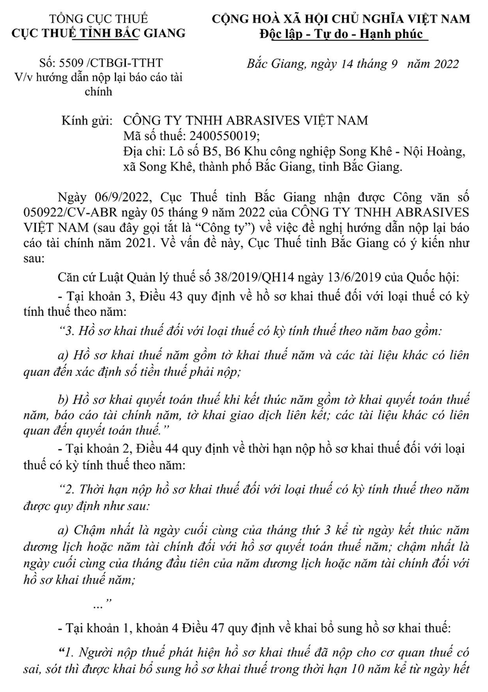
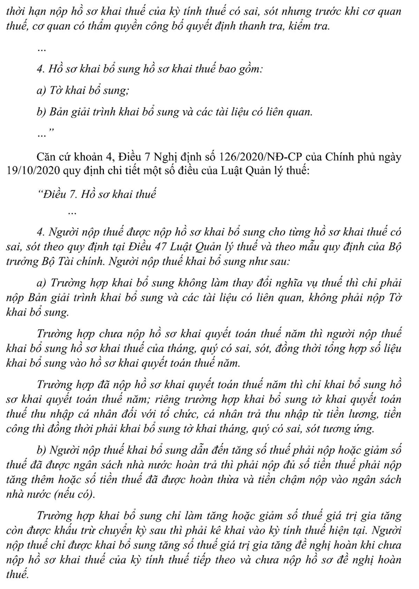
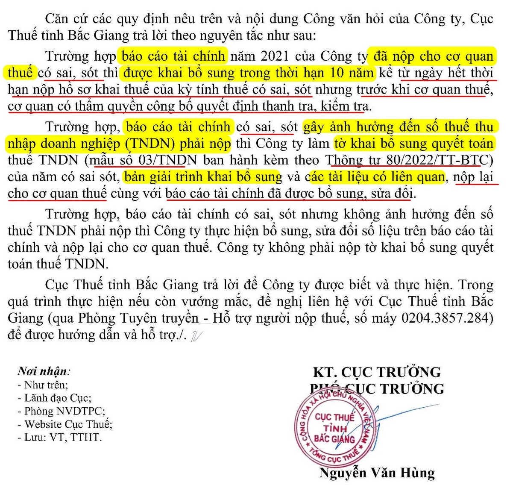

Làm sai báo cáo tài chính có bị phạt không? Có được nộp lại báo cáo tài chính làm sai của các năm trước? Có được kê khai bổ sung báo cáo tài chính làm sai? Kế toán Diệu Tâm xin trích dẫn cách Công văn hướng dẫn nộp lại BCTC để các bạn tham khảo nhé.
1. Công văn 5509/CTBGI-TTHT Của Cục Thuế Tỉnh Băc Giang ngày 14/09/2022



Câu hỏi:
- Kế toán trước đây của Công ty em do thiếu trình độ và làm ẩu nên Báo cáo tài chính của Công ty em từ năm 2009 đến năm 2014 bị sai lệch rất nhiều.
- Bây giờ em muốn nộp lại báo cáo cho năm 2009 - 2014 thì có được nộp qua mạng được không? Nếu không nộp được qua mạng thì hồ sơ nộp bản giấy bao gồm những hồ sơ gì? Có bị phạt hay không?
- Một điều nữa là do hồ sơ bị sai sót rất nhiều nên hầu như sổ sách kế toán phải in lại hết. Mà từ năm 2009 tới bây giờ Công ty em đã thay đổi con dấu 2 lần nên ko có dấu cũ để đóng cho hồ sơ này. Vậy bên em đóng dấu mới có hợp lệ không?
--------------------------------------------------------------------------------------------
Theo Công văn 18357/CT-HTr ngày 11/04/2016 và Công văn 51140/CT-HTr ngày 05/08/2015 của Cục thuế TP. Hà Nội quy định:
Kính gửi: Cổng thông tin điện tử - Bộ Tài chính
Cục thuế TP Hà Nội nhận được phiếu chuyển số 747/PC-TCT ngày 16/7/2015 của Tổng cục Thuế về việc hướng dẫn chính sách thuế của Độc giả Trần Thị Thu Hiền (SĐT: 0944478175; Email: baytheogio@gmail.com) do Cổng thông tin điện tử - Bộ Tài chính chuyển đến. Cục thuế TP Hà Nội có ý kiến như sau:Căn cứ Thông tư số 156/2013/TT-BTC ngày 06/11/2015 của Bộ Tài chính hướng dẫn thi hành một số điều của Luật Quản lý thuế; Luật sửa đổi, bổ sung một số điều của Luật Quản lý thuế và Nghị định số 83/2013/NĐ-CP ngày 22/7/2013 của Chính phủ: - Tại Điều 5 quy định về văn bản giao dịch với cơ quan thuế như sau: “Điều 5. Văn bản giao dịch với cơ quan thuế 1. Văn bản giao dịch với cơ quan thuế bao gồm tài liệu kèm theo hồ sơ thuế, công văn, đơn từ và các tài liệu khác do người nộp thuế; tổ chức được ủy nhiệm thu thuế và các tổ chức, cá nhân khác gửi đến cơ quan thuế. Đối với những văn bản, hồ sơ phải nộp cơ quan thuế theo quy định thì người nộp thuế nộp 01 bộ. 2. Văn bản giao dịch với cơ quan thuế phải ký, ban hành đúng thẩm quyền; thể thức văn bản, chữ ký, con dấu trên vấn bản phải thực hiện theo quy định của pháp luật về công tác văn thư. 3. Văn bản giao dịch với cơ quan thuế được thực hiện thông qua giao dịch điện tử thì phải tuân thủ đúng các quy định của pháp luật về giao dịch điện tử.” - Tại Khoản 5 Điều 10 quy định về khai bổ sung hồ sơ khai thuế như sau: “5. Khai bổ sung hồ sơ khai thuế a) Sau khi hết hạn nộp hồ sơ khai thuế theo quy định, người nộp thuế phát hiện hồ sơ khai thuế đã nộp cho cơ quan thuế có sai sót thì được khai bổ sung hồ sơ khai thuế. …. Hồ sơ khai thuế bổ sung được nộp cho cơ quan thuế vào bất cứ ngày làm việc nào, không phụ thuộc vào thời hạn nộp hồ sơ khai thuế của lần tiếp theo, nhưng phải trước khi cơ quan thuế, cơ quan có thẩm quyền công bố quyết định kiểm tra thuế, thanh tra thuế tại trụ sở người nộp thuế; nếu cơ quan thuế, cơ quan có thẩm quyền đã ban hành kết luận, quyết định xử lý về thuế sau kiểm tra, thanh tra thì người nộp thuế được khai bổ sung, điều chỉnh...” b) Hồ sơ khai bổ sung - Tờ khai thuế của kỳ tính thuế bị sai sót đã được bổ sung, điều chỉnh; - Bản giải trình khai bổ sung, điều chỉnh mẫu số 01/KHBS ban hành kèm theo Thông tư này (trong trường hợp khai bổ sung, điều chỉnh có phát sinh chênh lệch tiền thuế); - Tài liệu kèm theo giải thích số liệu trong bản giải trình khai bổ sung, điều chỉnh. c) Các trường hợp khai bổ sung hồ sơ khai thuế c.1) Trường hợp người nộp thuế khai bổ sung hồ sơ khai thuế không làm thay đổi tiền thuế phải nộp, tiền thuế được khấu trừ; tiền thuế đề nghị hoàn thì chỉ lập Tờ khai thuế của kỳ tính thuế có sai sót đã được bổ sung, điều chỉnh và gửi tài liệu giải thích kèm theo, không phải lập Bản giải trình khai bổ sung, điều chỉnh mẫu số 01/KHBS. c.2) Trường hợp người nộp thuế khai bổ sung hồ sơ khai thuế làm tăng tiền thuế phải nộp thì lập hồ sơ khai bổ sung, và tự xác định tiền chậm nộp căn cứ vào số tiền thuế phải nộp tăng thêm, số ngày chậm nộp và mức tính chậm nộp theo quy định. Trường hợp người nộp thuế không tự xác định hoặc xác định không đúng số tiền chậm nộp thì cơ quan thuế xác định số tiền chậm nộp và thông báo cho người nộp thuế biết. c.3) Trường hợp người nộp thuế khai bổ sung hồ sơ khai thuế làm giảm tiền thuế phải nộp thì lập hồ sơ khai bổ sung. Số tiền thuế điều chỉnh giảm được tính giảm nghĩa vụ thuế phải nộp, nếu đã nộp NSNN thì được bù trừ vào số thuế phải nộp của kỳ sau hoặc được hoàn thuế.” - Tại Điểm b Khoản 4 Điều 12 quy định về hồ sơ khai quyết toán thuế thu nhập doanh nghiệp như sau: “b) Hồ sơ khai quyết toán thuế thu nhập doanh nghiệp bao gồm: b.1) Tờ khai quyết toán thuế thu nhập doanh nghiệp theo mẫu số 03/TNDN ban hành kèm theo Thông tư này. b.2) Báo cáo tài chính năm hoặc Báo cáo tài chính đến thời điểm có quyết định về việc doanh nghiệp thực hiện chia, tách, hợp nhất, sáp nhập, chuyển đổi hình thức sở hữu, giải thể, chấm dứt hoạt động. b.3) Một hoặc một số phụ lục kèm theo tờ khai ban hành kèm theo Thông tư này (tùy theo thực tế phát sinh của người nộp thuế): …” Căn cứ Nghị định số 105/2013/NĐ-CP ngày 16/9/2013 của Chính phủ quy định xử phạt vi phạm hành chính trong lĩnh vực kế toán, kiểm toán độc lập. Căn cứ Thông tư số 166/2013/TT-BTC ngày 15/11/2013 của Bộ Tài chính quy định chi tiết về xử phạt vi phạm hành chính thuế. Căn cứ các quy định nêu trên, trường hợp báo cáo tài chính của Công ty Độc giả Trần Thị Thu Hiền có sai sót thì được khai bổ sung. Hồ sơ khai thuế bổ sung được nộp cho cơ quan thuế vào bất cứ ngày làm việc nào, không phụ thuộc vào thời hạn nộp hồ sơ khai thuế của lần tiếp theo, nhưng phải trước khi cơ quan thuế, cơ quan có thẩm quyền công bố quyết định kiểm tra thuế, thanh tra thuế tại trụ sở người nộp thuế. - Trường hợp, Báo cáo tài chính có sai sót gây ảnh hưởng đến số thuế TNDN phải nộp thì đơn vị làm hồ sơ khai bổ sung (mẫu số 01/KHBS kèm theo thông tư số 156/2013/TT-BTC) bổ sung, điều chỉnh số liệu trên Tờ khai quyết toán thuế TNDN của năm có sai sót (mẫu số 03/TNDN kèm theo thông tư số 156/2013/TT-BTC) kèm theo Báo cáo tài chính đã được bổ sung, sửa đổi. - Trường hợp, Báo cáo tài chính có sai sót nhưng không ảnh hưởng đến số thuế TNDN phải nộp thì đơn vị được phép khai bổ sung số liệu trên Báo cáo tài chính và nộp lại cho cơ quan thuế, không phải lập Bản giải trình khai bổ sung, điều chỉnh mẫu số 01/KHBS. Các hành vi vi phạm hành chính trong lĩnh vực kế toán bị xử phạt theo Nghị định số 105/2013/NĐ-CP ngày 16/9/2013 của Chính phủ, các hành vi vi phạm hành chính về thuế bị xử phạt theo quy định tại Thông tư số 166/2013/TT-BTC ngày 15/11/2013 của Bộ Tài chính. Công ty của Độc giả Trần Thị Thu Hiền đã đăng ký kê khai thuế qua mạng thì thực hiện việc nộp tờ khai qua mạng và tuân thủ đúng các quy định của pháp luật về giao dịch điện tử. Cục thuế TP Hà Nội trả lời để Cổng thông tin điện tử - Bộ Tài chính trả lời Độc giả Trần Thị Thu Hiền./.
|
---------------------------------------------------------------------------------------
Như vậy:
- Báo cáo tài chính làm sai được phép khai bổ sung và nộp lại (Nhưng phải trước khi cơ quan thuế có Quyết định thanh kiểm tra).
- Nếu làm sai Báo cáo tài chính mà ảnh hưởng đến số tiền thuế TNDN phải nộp thì khai bổ sung gồm:
+ Tờ khai Quyết toán thuế TNDN (Tờ khai điều chỉnh bổ sung)
+ Mẫu 01/KHBS - Bản giải trình khai bổ sung, điều chỉnh.
+ Báo cáo tài chính (Đã được sửa đổi, bổ sung).
- Nếu làm sai Báo cáo tài chính Không ảnh hưởng đến số thuế TNDN phải nộp thì hồ sơ gồm:
+ Báo cáo tài chính (Đã được sửa đổi, bổ sung).
- Báo cáo tài chính làm sai được phép khai bổ sung và nộp lại (Nhưng phải trước khi cơ quan thuế có Quyết định thanh kiểm tra).
- Nếu làm sai Báo cáo tài chính mà ảnh hưởng đến số tiền thuế TNDN phải nộp thì khai bổ sung gồm:
+ Tờ khai Quyết toán thuế TNDN (Tờ khai điều chỉnh bổ sung)
+ Mẫu 01/KHBS - Bản giải trình khai bổ sung, điều chỉnh.
+ Báo cáo tài chính (Đã được sửa đổi, bổ sung).
- Nếu làm sai Báo cáo tài chính Không ảnh hưởng đến số thuế TNDN phải nộp thì hồ sơ gồm:
+ Báo cáo tài chính (Đã được sửa đổi, bổ sung).
Chú ý: Ngoài những hồ sơ trên có những Chi cục thuế yêu cầu phải có Công văn xin nộp lại Báo cáo tài chính và trên đó giải trình rõ sai sót ở đâu, sai sót những gì...(Nếu cơ quan thuế yêu cầu thì các bạn nộp, nếu không các bạn có thể lưu tại DN để sau này giải trình cho nhanh nhé).
------------------------------------------------------------------------------------
- Báo cào tài chính làm sai có bị phạt không? Có 2 trường hợp:
+ Nếu DN tự phát hiện ra BCTC làm sai -> Tự sửa đổi, bổ sung và nộp lại (Trước khi Cơ quan thuế có Quyết định thanh kiểm tra), thì:
* Nếu sai sót không ảnh hưởng đến thuế TNDN thì khi nộp lại BCTC không bị phạt.
* Nếu sai sót ảnh hưởng đến thuế TNDN: - Nếu thừa sẽ được bù trừ vào các kỳ sau. Nếu thiếu sẽ bị truy thu thêm và phạt chậm nộp tiền thuế. (không bị phạt khi nộp lại BCTC).
+ Nếu BCTC làm sai nhưng DN không tự phát hiện ra mà đã có Thông báo hoặc Quyết định thanh kiểm tra tại Doanh nghiệp của Cơ quan thuế (Cơ quan thuế phát hiện) -> Thì sẽ bị phạt. (Chi tiết xem bên dưới).
+ Nếu DN tự phát hiện ra BCTC làm sai -> Tự sửa đổi, bổ sung và nộp lại (Trước khi Cơ quan thuế có Quyết định thanh kiểm tra), thì:
* Nếu sai sót không ảnh hưởng đến thuế TNDN thì khi nộp lại BCTC không bị phạt.
* Nếu sai sót ảnh hưởng đến thuế TNDN: - Nếu thừa sẽ được bù trừ vào các kỳ sau. Nếu thiếu sẽ bị truy thu thêm và phạt chậm nộp tiền thuế. (không bị phạt khi nộp lại BCTC).
+ Nếu BCTC làm sai nhưng DN không tự phát hiện ra mà đã có Thông báo hoặc Quyết định thanh kiểm tra tại Doanh nghiệp của Cơ quan thuế (Cơ quan thuế phát hiện) -> Thì sẽ bị phạt. (Chi tiết xem bên dưới).
-------------------------------------------------------------------------------------------
Mức phạt vi phạm hành chính trong lĩnh vực kế toán theo quy định tại Nghị định 105/2013/NĐ-CP như: Mức phạt làm sai báo cáo tài chính, lập báo cáo tài chính không đầy đủ nội dung, lập báo cáo tài chính không đúng với số liệu trên sổ sách kế toán và chứng từ kế toán, giả mạo báo cáo tài chính, khai man số liệu trên báo cáo tài chính ...
=> Chi tiết bạn xem tại đây nhé: Mức phạt làm sai Báo cáo tài chính.
Mức phạt vi phạm hành chính về thuế theo Thông tư 166/2013/TT-BTC như: Phạt chậm nộp tiền thuế ...
-------------------------------------------------------------------------------------------------
-------------------------------------------------------------------------------------------
Kế toán Diệu Tâm xin chúc các bạn thành công!
Các bạn muốn học thực hành làm kế toán tổng hợp trên chứng từ thực tế, thực hành xử lý các nghiệp vụ hạch toán, tính thuế, kê khai thuế GTGT. TNCN, TNDN... tính lương, trích khấu hao TSCĐ....lập báo cáo tài chính, quyết toán thuế cuối năm ... thì có thể tham gia: Lớp học thực hành kế toán thực tế tại Kế toán Diệu Tâm.
----------------------------------------------------------------------
Các bạn muốn học thực hành làm kế toán tổng hợp trên chứng từ thực tế, thực hành xử lý các nghiệp vụ hạch toán, tính thuế, kê khai thuế GTGT. TNCN, TNDN... tính lương, trích khấu hao TSCĐ....lập báo cáo tài chính, quyết toán thuế cuối năm ... thì có thể tham gia: Lớp học thực hành kế toán thực tế tại Kế toán Diệu Tâm.
----------------------------------------------------------------------